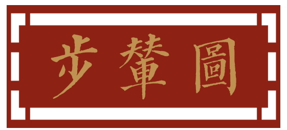
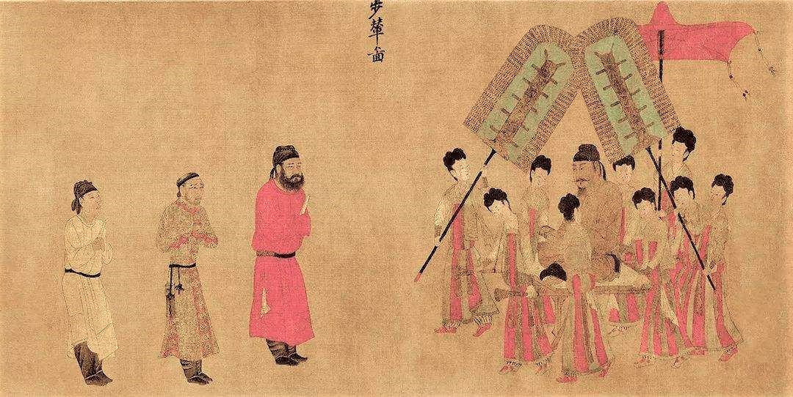

《步辇图》是唐朝画家阎立本的代表作，现在被认为是宋代的临摹本珍藏于故宫博物院。阎立本(601 —673唐代雍州人，阎立本非常擅长书画，而且画作的题材也非常的丰富,特别善于作人物肖像画。《步辇图》整幅作品色彩淡雅,线条生动流利，没有丝毫的滞逆感，而且其中的人物错落有趣。《步辇图》描绘了唐太宗李世民会见吐蕃使者禄东赞的真实情景，具有非常高的历史价值和艺术价值。《步辇图》是中原民族和藏族之间友好往来的历史见证，它发生的背景是贞观之治的时代。当时李世民励精图治，实现了唐代的全面兴盛。再加上唐代实行兼容并包的开放政策,唐朝政府和其他民族之间实现了友好相处。640年,松赞千布派使者禄东赞向唐太宗求亲，但是在当时有五个不同民族的首领向唐朝提亲,唐太宗一时感到非常为难，最后想出了一个平等竞争的办法，让五个民族首领的大使参加考试，谁考得最好就把公主嫁给那家的首领。最后吐蕃使者禄东赞代表松赞千布取得了胜利，于是唐太宗决定将文成公主嫁给吐蕃王松赞千布。
《步辇图》中对于人物的衣着纹饰勾勒的非常逼真，衬托了人物的身份地位。在局部地方采用了晕染的作图方法，例如在表现靴筒的褶皱地方,给人以强烈的立体感。在《步辇图》中宫廷的侍女的衣着正是当时比较流行高腰掩乳服装。在唐代之所以高腰线得到了广泛的应用，和当时唐代的历史文化具有密切的关系。在当时丰腴的身材、雍容华贵的面貌是唐代女性的理想形象，再加上从上到下比较开放的社会风气，都促进了高腰线服饰的发展,特别是高腰掩乳女装在唐代的女性的服饰发展中具有重要的代表意义。腰线是表示腰围的线，其中在人体自然腰围也就是腰最细的附近地方称之为自然腰线，高于自然腰线的都属于高腰线，低于自然腰线的称之为低腰。高腰掩乳女装表现的就是成熟女性所特有的精神面貌，高腰掩乳是一种高于乳峰的腰线，是高腰线中比较特殊的—种。沈从文在研究中国服装历史的过程中认为高腰掩乳腰线出现在隋朝或者更早,但是流行于初唐和盛唐的历史时期“初唐妇女装束，还接近隋代，平居一般多小袖长裙,裙上束乳部以上”“裙上系及腰部,还是盛唐规模”。高腰掩乳女装是流行于唐代的服装，和隋代的上俭下丰的裙服不同，这种服装大部分是和襦裙等搭配，在裙子的上端有裙腰或者束带等，腰带比较细，裙腰和腰线构成了腰
线,在贵族女性或者身份比较高的女侍中特别流行。